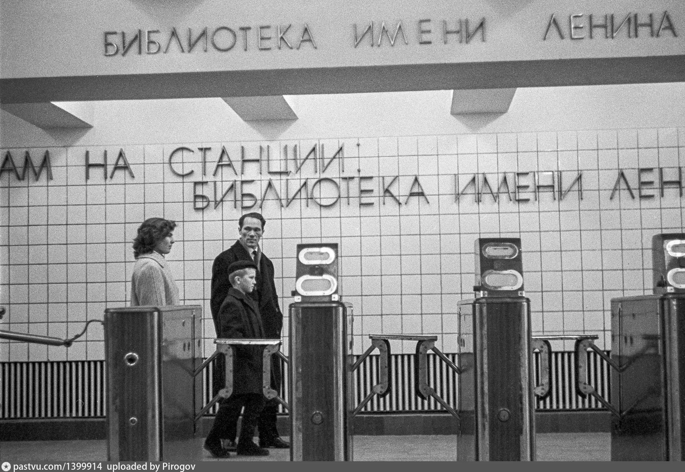
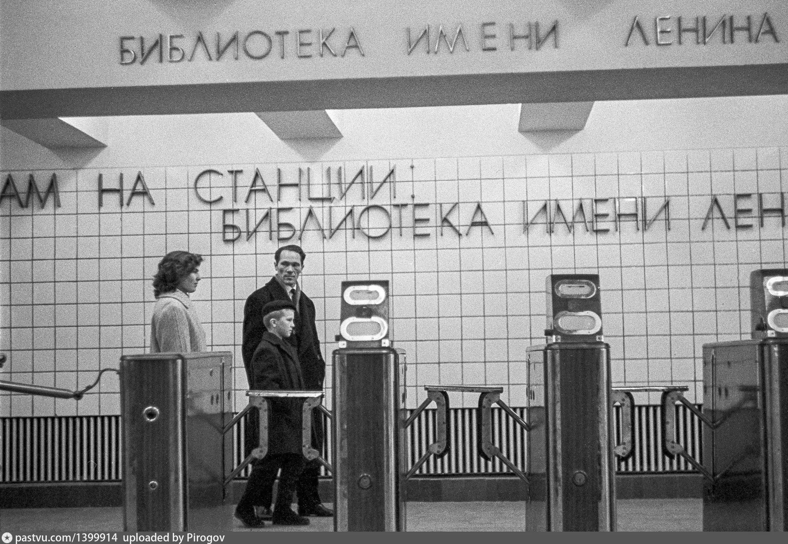
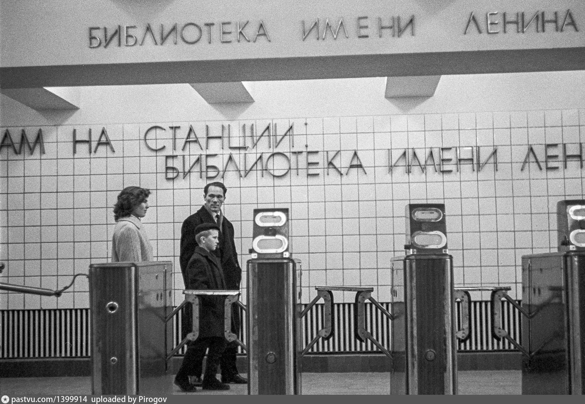

1958
47

 

Библиотека им.Ленина
Cтанция первой очереди Московского метрополитена, открытая 15 мая 1935 году.
Оформление станции посвящено Библиотеке им.Ленина ( ныняшняя Российская государственная библиотека).
Полный сборник истории всех станций Московского метро поможет изучить каждую линию по отдельности, чтобы собрать целую карту в едино
Замоскворецкая
Люблинско-Дмитровская

Cтанция первой очереди Московского метрополитена, открытая 15 мая 1935 году.
Оформление станции посвящено Библиотеке им.Ленина ( ныняшняя Российская государственная библиотека).
Подробная история метро год за годом, но без нудностей и скучных дат

1932
У нас недавно вышли свежие статьи, и с уверенностью советуем вам их изучить — возможно, вам удастся отыскать в них множество полезной информации!